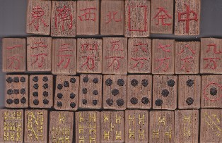

（４９）伝・ビルマ竹牌
|
昨年（H23）、何気なくオクソンを見ていたら、この牌が出品されていた。惹句には「インパール作戦で捕虜になった日本軍兵士が、ビルマの捕虜収容所で制作した牌」とあった。
木箱に貼ってあった紙
「伝」というのは、“そのように伝えられている”という意味。もとより麻雀牌に、産地や制作者の名前なんか無いのが当たり前。そして終戦直後には、このような木製や竹製の手彫り牌が多く制作されている。となれば「日本軍兵士がビルマの....」という話も、真偽のほどは判然としない。そのせいか、誰も入札していなかった。「まぁ、どうでもいいけど面白そうだし....」と思って最低価格を入れておいたら落ちた、というか応札はσ(-_-)だけだった（笑）

手彫り牌なので彫りやすさ優先、図柄は大いに簡略化してある。そんなかで索子の図柄は、ちと面白い。  が逆流れなのは、よくある勘違い。 が逆流れなのは、よくある勘違い。
昔、σ(-_-)も木彫り牌を手作りしようと思ったことがある。まず最初に材料の木をノコギリでサイコロ状に切り分ける。しかし大きさを揃えて切り分けるだけでも大変。その段階で
かなり苦労した。そこで136枚全部ではなく、とりあえず10ピースほど切り分けたところで、最初の１個を彫り始めた。しかし彫り道具もオモチャのような小刀セット。熱意だけで彫り始めたが、すぐ肩は痛くなるわ、目はチカチカするわ、指は痛くなるわ...こんなこと136枚分、やっとれるか.....(>_<) てなわけで、最初の１個の途中でサジを投げた。そんな経験があるので、木製 竹製の手彫り牌というだけで先人の情熱に頭が下がるばかり。
“ビルマ竹牌”というのは、牌身を含めて全体が“ビルマ産の竹製”という意味。昔は表側（牌身）が象牙であろうと牛骨であろうと、はたまた合成樹脂であろうと、裏打ちは竹であった。そこで、この“ビルマ竹牌”のように、わざわざ「竹牌」と云えば、全身が竹製の牌を指した。しかし現在は全体が合成樹脂なのが当たり前。そこで現在、「竹牌」と云えば“牌身は合成樹脂であるが、裏打ちは竹”である牌を指すことが多い。
言葉の意味は時代とともに変遷するので、まぁそれはそれ。しかしσ(-_-)のようなロートルは、オクソンで「竹牌！」という惹句を見ると、反射的に「全体が竹製の牌」と思って、いつも見直していた。まぁ、最近はだいぶん慣れたけど....(^-^；
いずれにしても誰か この竹牌のＤＮＡ鑑定でもしてくれないかな。本当にビルマ産の竹であることがハッキリすれば、骨董的 資料的価値が10倍くらいに上がる（かも？）。
|
Ｃｒ 投稿日：2012/05/20(Sun)
あさみさん、こんにちは。
「伝・ビルマ竹牌」の画像を拝見して１つ不思議に思ったことがあります。
白に額縁のような四角が彫られていますよね。
これは中国や東南アジアの麻雀牌の特徴じゃないでしょうか。
日本人が作った麻雀牌の白に四角が彫られるなんてこと、あり得るでしょうか？
|
あさみ 投稿日：2012/05/20(Sun)
ども、Ｃｒさん
その点はσ(-_-)も（ふ〜ん）と思いました。しかし考えてみると、全身が竹。
そこで何の彫りも無ければ、“白”は裏表が存在しない牌になってしまいます。
すると配牌に“白”があったとき、それが本当に“白”なのか、別の牌が裏向きになっているのか確認したくなります。
そんな手間を回避するため、中国式に枠を彫ったのかなと思う次第。(^-^)
|
Ｃｒ 投稿日：2012/05/21(Mon)
あー、なるほど！
裏表の区別をつけるために彫ったって可能性は高そうですね。
となると後は竹の専門家に鑑定を依頼するだけかと。(^_^)
|